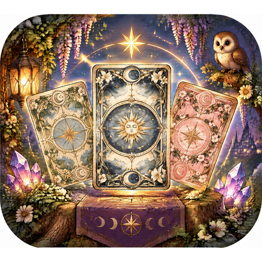

治癒女巫：占卜與水晶
治癒女巫：占卜與水晶 ・ Healing Witch: Tarot & Crystals ・ 癒しの魔女：占いと水晶
在森林深處的小屋裡，溫柔的仙子女巫和布偶貓露娜為你翻開塔羅牌。78 張手繪塔羅牌、詳細的愛情、工作與心事解讀，還有屬於你的水晶許願房間。
In a cottage deep in the forest, a gentle fairy witch and her ragdoll cat Luna read the tarot for you — 78 hand-painted cards, detailed readings and your own crystal wish room.
森の奥の小さな家で、やさしい妖精の魔女と猫のルナがタロットを読んでくれます。手描きの78枚のカード、ていねいなリーディング、あなただけのクリスタルの部屋。
支援 Support
如有問題或建議，請電郵至 / Contact：
pixelcraft.games59@gmail.com